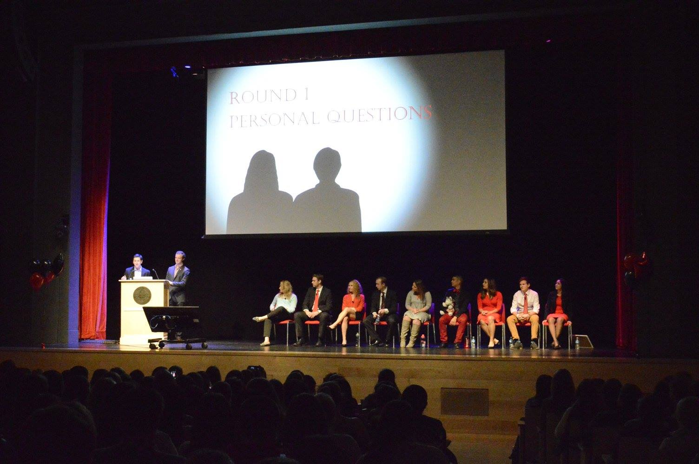
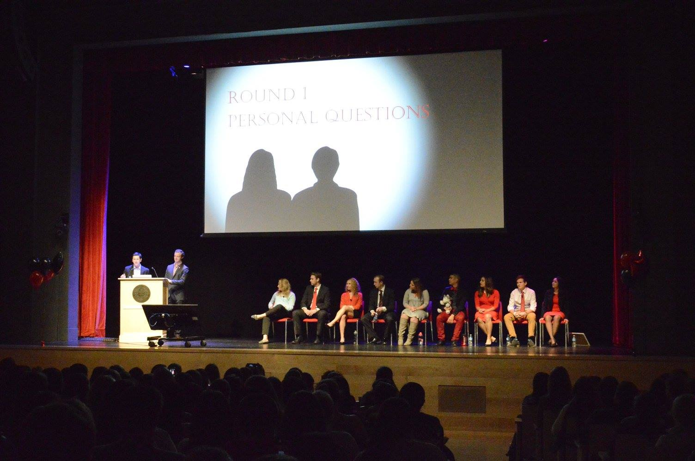

In the fall of 2014 and 2015 I served on the Northeastern Homecoming Committee as the representative for the Student Alumni Association. Along with helping shape the look and feel of Homecoming, I was tasked with serving as the lead for Mayor of Huntington Avenue, a signature Northeastern Homecoming event. The event invited members of the student body to run for the coveted position of Mayor by participating in official Debate and appearing at various on-campus events during Homecoming Week. The community would then vote on who they thought demonstrated the most spirit and would be best suited to carry out the Mayoral duties.
My responsibilities included interviewing potential candidates, helping selecting the finalists, putting together a marketing plan, creating visuals for the events, establishing the stage layout, writing the script, as well as being the main point of contact for everyone participating in the Debate. The result of my colleague's hard work as well as my own was an attendance of 800+ students and a 50% increase in student organization participation, as well as very positive reviews from the student body who claimed it was one of the most successful, entertaining, and well-represented Debate in recent years.
You can watch the event in its entirety here.
 
